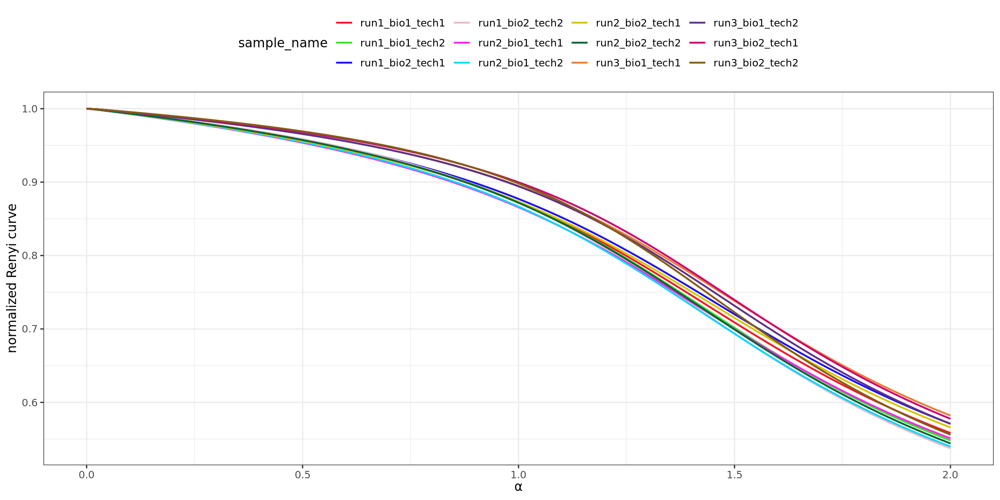
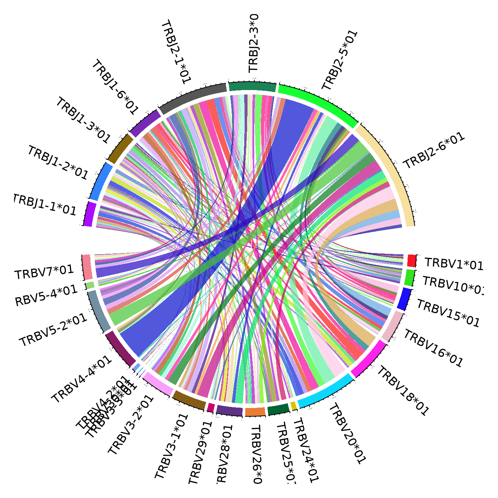

Repertoire analysis
Count distribution
Diversity analysis

VJ gene usage
VJ genes paired usage
Note
The figures use the clonotypes annotated by unique V and J genes, and ignoring the genes that portray less than 15% of the total number of annotated clonotypes


CDR3 sequence length analysis
Appendix
Expand for Session Info
─ Session info ───────────────────────────────────────────────────────────────
setting value
version R version 4.5.1 (2025-06-13)
os Ubuntu 20.04.6 LTS
system x86_64, linux-gnu
ui X11
language (EN)
collate en_US.UTF-8
ctype en_US.UTF-8
tz UTC
date 2025-11-12
pandoc 2.5 @ /usr/bin/ (via rmarkdown)
quarto 1.4.549
─ Packages ───────────────────────────────────────────────────────────────────
package * version date (UTC) lib source
circlize * 0.4.16 2024-02-20 [2] RSPM (R 4.3.0)
ComplexUpset * 1.3.3 2021-12-11 [2] RSPM (R 4.2.0)
dplyr * 1.1.4 2023-11-17 [1] CRAN (R 4.5.1)
forcats * 1.0.0 2023-01-29 [2] RSPM (R 4.2.0)
ggplot2 * 3.4.4 2023-10-12 [1] CRAN (R 4.5.1)
ggridges * 0.5.6 2024-01-23 [2] RSPM (R 4.3.0)
lubridate * 1.9.4 2024-12-08 [2] RSPM (R 4.4.0)
magrittr * 2.0.4 2025-09-12 [1] CRAN (R 4.5.1)
Polychrome * 1.5.4 2025-04-06 [2] RSPM (R 4.4.0)
purrr * 1.0.4 2025-02-05 [2] RSPM (R 4.4.0)
readr * 2.1.5 2024-01-10 [2] RSPM (R 4.3.0)
sessioninfo * 1.2.3 2025-02-05 [2] RSPM (R 4.4.0)
stringr * 1.6.0 2025-11-04 [1] CRAN (R 4.5.1)
tibble * 3.3.0 2025-06-08 [2] RSPM (R 4.5.0)
tidyr * 1.3.1 2024-01-24 [2] RSPM (R 4.3.0)
tidyverse * 2.0.0 2023-02-22 [2] RSPM (R 4.2.0)
yaml * 2.3.10 2024-07-26 [2] RSPM (R 4.4.0)
[1] /usr/local/lib/R/site-library
[2] /usr/lib/R/site-library
[3] /usr/lib/R/library
* ── Packages attached to the search path.
──────────────────────────────────────────────────────────────────────────────